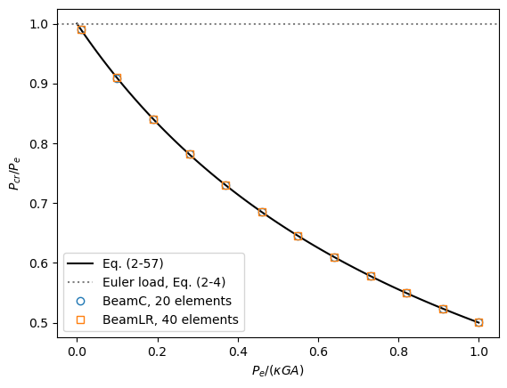

Linear buckling analysis of a column#
A clamped-free column of BeamC or BeamLR elements, along an arbitrary direction in space, under a compressive load at its free end. Each bending plane buckles at its own Euler load, reduced by the shear deformation of the Timoshenko elements as in Timoshenko and Gere (1961). The linear buckling analysis is described in Linear buckling and natural frequencies and the geometric stiffness matrices of the elements in Beam theory and the beam
elements. The full references are at the end of the notebook.
[1]:
%matplotlib inline
import numpy as np
import matplotlib.pyplot as plt
from numpy import pi
from scipy.linalg import eigh
from scipy.sparse import coo_matrix
from pyfe3d import (BeamC, BeamCData, BeamCProbe, BeamLR, BeamLRData,
BeamLRProbe, DOF, DOUBLE, INT)
from pyfe3d.beamprop import BeamProp
from pyfe3d.solver import solve
The reference values#
The Euler load of a clamped-free column, Eq. (2-4) of Timoshenko and Gere (1961, Sec. 2.1, p. 48), is
with \(I\) = Izz or Iyy for the two bending planes; the second mode of a plane buckles at \(9 P_e\) (p. 48). With shear deformation, Eq. (2-57) of Timoshenko and Gere (1961, Sec. 2.17, p. 133) gives
with \(n = 1.2\) for a rectangular section (p. 132), i.e. \(A G/n = \kappa G A\) with the shear correction factor \(\kappa = 5/6\).
The analysis#
The column has the length \(L = 3\) m, \(E = 203\) GPa and \(G = (5/6) E/(2 (1 +
\nu))\) with \(\nu = 0.3\), i.e. with \(\kappa = 5/6\) included in \(G\), so that prop.G*prop.A is \(\kappa G A\). The function below:
builds the column of
num_elementselements alongdirection, with the vectorvxyofupdate_rotation_matrixdefining the element \(x\)-\(y\) plane, and assembles \(\boldsymbol{K}_{C0}\);clamps the first node and solves the linear static problem of a unit compressive force at the free end, \(\boldsymbol{u}_0\);
gives \(\boldsymbol{u}_0\) to each element with
update_probe_ue, whose axial force then defines the geometric stiffness matrix \(\boldsymbol{K}_G\) ofupdate_KG;solves the eigenvalue problem of the load multipliers \(\lambda\),
here with the dense scipy.linalg.eigh, as \(-\boldsymbol{K}_G \boldsymbol{u}
= \mu \boldsymbol{K}_{C0} \boldsymbol{u}\), \(\lambda = 1/\mu\) (for large models pyfe3d.solver.linear_buckling solves the same problem with a sparse eigensolver). Since the reference load is 1 N, the load multipliers are the buckling loads in N.
With shear_ratio, the shear modulus is set such that \(P_e/(\kappa G A)\) of the weak plane equals shear_ratio, to study columns whose buckling load is governed by the shear deformation:
[2]:
ELEMENTS = {
'BeamC': (BeamC, BeamCProbe, BeamCData),
'BeamLR': (BeamLR, BeamLRProbe, BeamLRData),
}
L = 3.
E = 203.e9
def buckling_loads(name, b, h, direction, vxy, num_elements, shear_ratio=None):
cls, probecls, datacls = ELEMENTS[name]
prop = BeamProp()
prop.A = b*h
prop.E = E
prop.G = 5/6*E/2/1.3
prop.Izz = b*h**3/12
prop.Iyy = b**3*h/12
prop.J = prop.Izz + prop.Iyy
if shear_ratio is not None:
prop.G = pi**2*E*min(prop.Izz, prop.Iyy)/(4*L**2)/(shear_ratio*prop.A)
direction = np.asarray(direction, dtype=float)
direction /= np.linalg.norm(direction)
s = np.linspace(0, L, num_elements + 1)
x = (s[:, None]*direction[None, :]).flatten()
N = DOF*(num_elements + 1)
data = datacls()
probe = probecls()
KC0r = np.zeros(data.KC0_SPARSE_SIZE*num_elements, dtype=INT)
KC0c = np.zeros(data.KC0_SPARSE_SIZE*num_elements, dtype=INT)
KC0v = np.zeros(data.KC0_SPARSE_SIZE*num_elements, dtype=DOUBLE)
KGr = np.zeros(data.KG_SPARSE_SIZE*num_elements, dtype=INT)
KGc = np.zeros(data.KG_SPARSE_SIZE*num_elements, dtype=INT)
KGv = np.zeros(data.KG_SPARSE_SIZE*num_elements, dtype=DOUBLE)
beams = []
for i in range(num_elements):
beam = cls(probe)
beam.n1, beam.n2 = i + 1, i + 2
beam.c1, beam.c2 = DOF*i, DOF*(i + 1)
beam.init_k_KC0 = i*data.KC0_SPARSE_SIZE
beam.init_k_KG = i*data.KG_SPARSE_SIZE
beam.update_rotation_matrix(vxy[0], vxy[1], vxy[2], x)
beam.update_probe_xe(x)
beam.update_KC0(KC0r, KC0c, KC0v, prop)
beams.append(beam)
KC0 = coo_matrix((KC0v, (KC0r, KC0c)), shape=(N, N)).tocsc()
bk = np.zeros(N, dtype=bool)
bk[:DOF] = True
bu = ~bk
# unit compressive load at the free end
fext = np.zeros(N)
fext[-DOF:-DOF + 3] = -direction
u0 = np.zeros(N)
u0[bu] = solve(KC0[bu, :][:, bu], fext[bu])
for beam in beams:
beam.update_probe_ue(u0)
beam.update_KG(KGr, KGc, KGv, prop)
KG = coo_matrix((KGv, (KGr, KGc)), shape=(N, N)).toarray()
KC0uu = KC0[bu, :][:, bu].toarray()
mu = eigh(-KG[np.ix_(bu, bu)], KC0uu, eigvals_only=True)
loads = np.sort(1/mu[mu > 1.e-12])
euler_z = pi**2*E*prop.Izz/(4*L**2)
euler_y = pi**2*E*prop.Iyy/(4*L**2)
return (loads[:2], min(euler_z, euler_y), max(euler_z, euler_y),
prop.G*prop.A)
Slender columns#
A square section, \(b = h = 0.05\) m, and a rectangular one, \(b = 0.10\) m and \(h = 0.05\) m, with the column along \(X\) and along the skew direction \((1, 2,
3)\), with 20 BeamC or 100 BeamLR elements. For the rectangular section \(I_{zz} = 4 I_{yy}\), so the second load is the Euler load of the strong plane, \(4 P_e\), below the second mode of the weak plane, \(9 P_e\); for the square section both planes buckle at the same load. The skew direction shows that the transformation to global coordinates keeps the two bending planes uncoupled. For these slender columns the reduction due to the shear deformation is small, 0.018 % (weak
plane) and 0.071 % (strong plane of the rectangular section):
[3]:
shear = lambda Pe, kGA: Pe/(1 + Pe/kGA) # Eq. (2-57), n/(A*G) = 1/(kappa*G*A)
print('%-7s %4s %-11s %-10s %4s %12s %12s %10s' % ('element', 'n_e', 'b x h',
'direction', 'mode', 'pyfe3d (N)', 'Eq. (2-57)', 'rel. diff.'))
for name, num_elements in [('BeamC', 20), ('BeamLR', 100)]:
for b, h in [(0.05, 0.05), (0.10, 0.05)]:
for direction, vxy in [((1, 0, 0), (0, 1, 0)), ((1, 2, 3), (0, 0, 1))]:
loads, euler_weak, euler_strong, kGA = buckling_loads(
name, b, h, direction, vxy, num_elements)
second = euler_weak if b == h else min(euler_strong, 9*euler_weak)
for mode, (load, Pe) in enumerate(zip(loads, [euler_weak, second])):
ref = shear(Pe, kGA)
print('%-7s %4d %-11s %-10s %4d %12.2f %12.2f %10.2e'
% (name, num_elements, '%.2fx%.2f' % (b, h),
str(direction), mode + 1, load, ref, load/ref - 1))
element n_e b x h direction mode pyfe3d (N) Eq. (2-57) rel. diff.
BeamC 20 0.05x0.05 (1, 0, 0) 1 28981.09 28981.09 1.44e-07
BeamC 20 0.05x0.05 (1, 0, 0) 2 28981.09 28981.09 1.44e-07
BeamC 20 0.05x0.05 (1, 2, 3) 1 28981.09 28981.09 1.44e-07
BeamC 20 0.05x0.05 (1, 2, 3) 2 28981.09 28981.09 1.44e-07
BeamC 20 0.10x0.05 (1, 0, 0) 1 57962.18 57962.17 1.44e-07
BeamC 20 0.10x0.05 (1, 0, 0) 2 231724.93 231724.84 4.19e-07
BeamC 20 0.10x0.05 (1, 2, 3) 1 57962.18 57962.17 1.44e-07
BeamC 20 0.10x0.05 (1, 2, 3) 2 231724.93 231724.84 4.19e-07
BeamLR 100 0.05x0.05 (1, 0, 0) 1 28982.28 28981.09 4.11e-05
BeamLR 100 0.05x0.05 (1, 0, 0) 2 28982.28 28981.09 4.11e-05
BeamLR 100 0.05x0.05 (1, 2, 3) 1 28982.28 28981.09 4.11e-05
BeamLR 100 0.05x0.05 (1, 2, 3) 2 28982.28 28981.09 4.11e-05
BeamLR 100 0.10x0.05 (1, 0, 0) 1 57964.56 57962.17 4.11e-05
BeamLR 100 0.10x0.05 (1, 0, 0) 2 231734.36 231724.84 4.11e-05
BeamLR 100 0.10x0.05 (1, 2, 3) 1 57964.56 57962.17 4.11e-05
BeamLR 100 0.10x0.05 (1, 2, 3) 2 231734.36 231724.84 4.11e-05
The geometric stiffness matrices take the slopes \(v_{,x}\), \(w_{,x}\) of the transverse displacements, not the rotations, which keeps the planes uncoupled and puts the shear deformation into the buckling load. BeamC, whose slopes include the constant shear strain of its consistent shape functions, reproduces Eq. (2-57) with a relative difference below \(10^{-6}\) with 20 elements; BeamLR, with the slopes of its linear interpolation, converges to it as the square of the
element length, about \(4 \times 10^{-5}\) with 100 elements.
Shear-flexible columns#
The same square column along \((1, 2, 3)\), with a low shear stiffness, as in sandwich and composite columns: \(P_e/(\kappa G A)\) from 0 to 1. Eq. (2-57) lowers the load by \(1 - 1/(1 + P_e/(\kappa G A))\), e.g. 16.7 % for 0.2 and 37.5 % for 0.6. The table compares the lowest load of 20 BeamC and 40 BeamLR elements with Eq. (2-57) and the figure shows the whole range:
[4]:
print('%-7s %4s %11s %12s %12s %12s %10s' % ('element', 'n_e', 'Pe/(kGA)',
'Euler (N)', 'pyfe3d (N)', 'Eq. (2-57)', 'rel. diff.'))
for name, num_elements in [('BeamC', 20), ('BeamLR', 40)]:
for shear_ratio in [0.2, 0.6]:
loads, euler, _, kGA = buckling_loads(name, 0.05, 0.05, (1, 2, 3),
(0, 0, 1), num_elements,
shear_ratio=shear_ratio)
ref = shear(euler, kGA)
print('%-7s %4d %11.1f %12.1f %12.1f %12.1f %10.2e'
% (name, num_elements, euler/kGA, euler, loads[0], ref,
loads[0]/ref - 1))
element n_e Pe/(kGA) Euler (N) pyfe3d (N) Eq. (2-57) rel. diff.
BeamC 20 0.2 28986.3 24156.9 24155.2 7.14e-05
BeamC 20 0.6 28986.3 18118.6 18116.4 1.20e-04
BeamLR 40 0.2 28986.3 24160.4 24155.2 2.14e-04
BeamLR 40 0.6 28986.3 18119.3 18116.4 1.61e-04
[5]:
ratios = np.linspace(0.01, 1., 12)
curve = np.linspace(0, 1., 101)
fig, ax = plt.subplots()
ax.plot(curve, 1/(1 + curve), 'k-', label='Eq. (2-57)')
ax.axhline(1., color='gray', ls=':', label='Euler load, Eq. (2-4)')
for name, num_elements, marker in [('BeamC', 20, 'o'), ('BeamLR', 40, 's')]:
ratio_fe = []
for shear_ratio in ratios:
loads, euler, _, kGA = buckling_loads(name, 0.05, 0.05, (1, 2, 3),
(0, 0, 1), num_elements,
shear_ratio=shear_ratio)
ratio_fe.append(loads[0]/euler)
ax.plot(ratios, ratio_fe, marker, mfc='none',
label='%s, %d elements' % (name, num_elements))
ax.set_xlabel(r'$P_e/(\kappa G A)$')
ax.set_ylabel(r'$P_{cr}/P_e$')
ax.legend()
plt.show()

Both elements follow Eq. (2-57); their differences from it fall as the square of the element length, and are about \(10^{-4}\) with these meshes.
References#
Timoshenko, S. P. and Gere, J. M., Theory of Elastic Stability, 2nd ed., McGraw-Hill, New York, 1961.